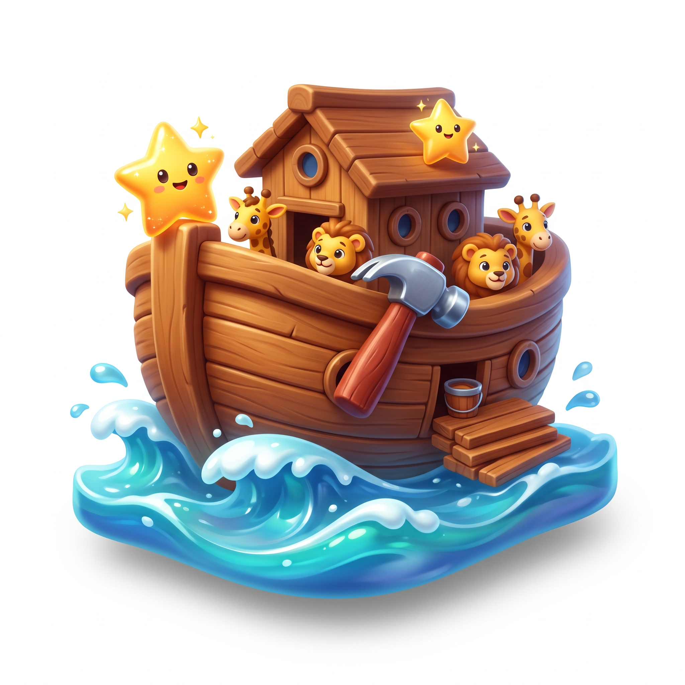
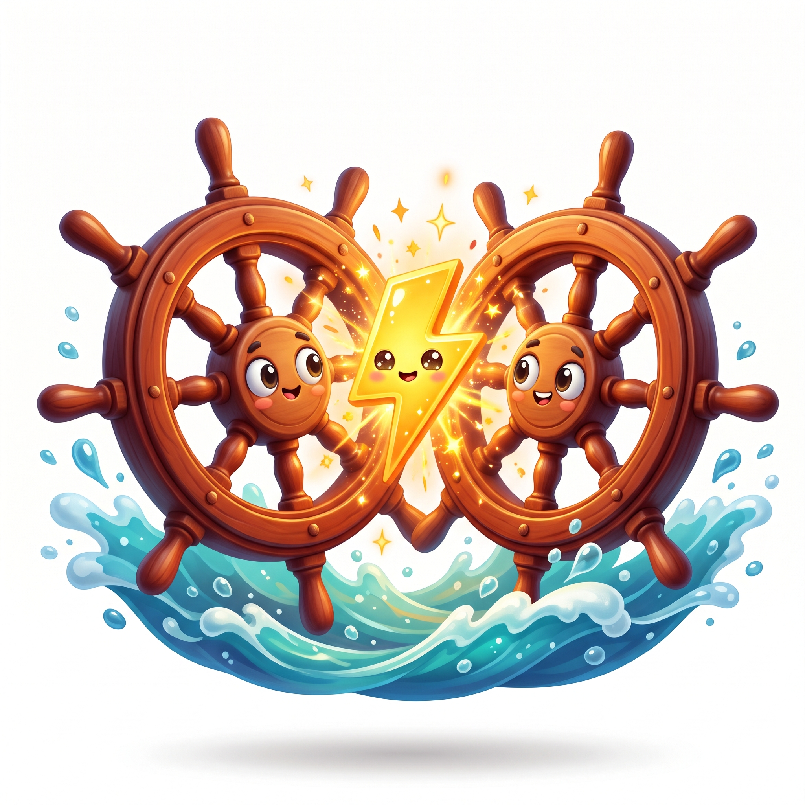
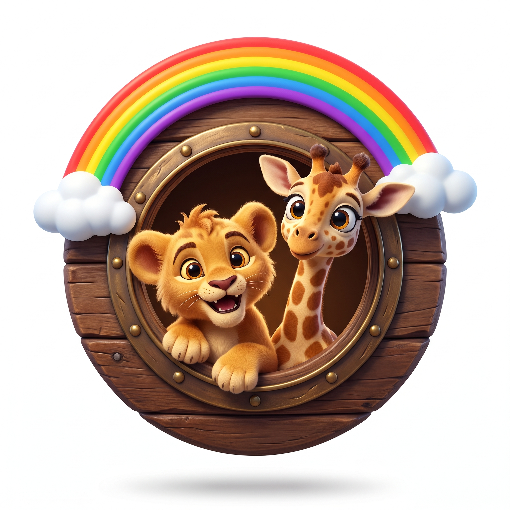

PERMAINAN 1 • RAKIT KAPAL
ARSITEK BAHTERA
Pasang 6 bagian papan kayu dengan menjawab kisah Nabi Nuh a.s. hingga bahtera siap berlayar!

PERMAINAN 2 • 2 ATAU 4 PEMAIN PID
ARENA 4 PENJURU
Maju 2 atau 4 siswa sekaligus ke depan papan kelas! Adu cepat melajukan Bahtera Tim!

PERMAINAN 3 • SORTIR SIKAP
NAIK KE BAHTERA
Masukkan perilaku teladan Nabi Nuh a.s. ke dalam Bahtera & buang sikap tercela!